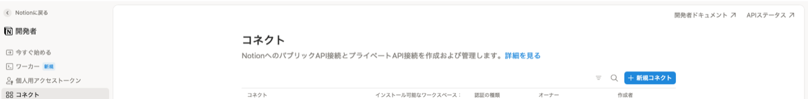
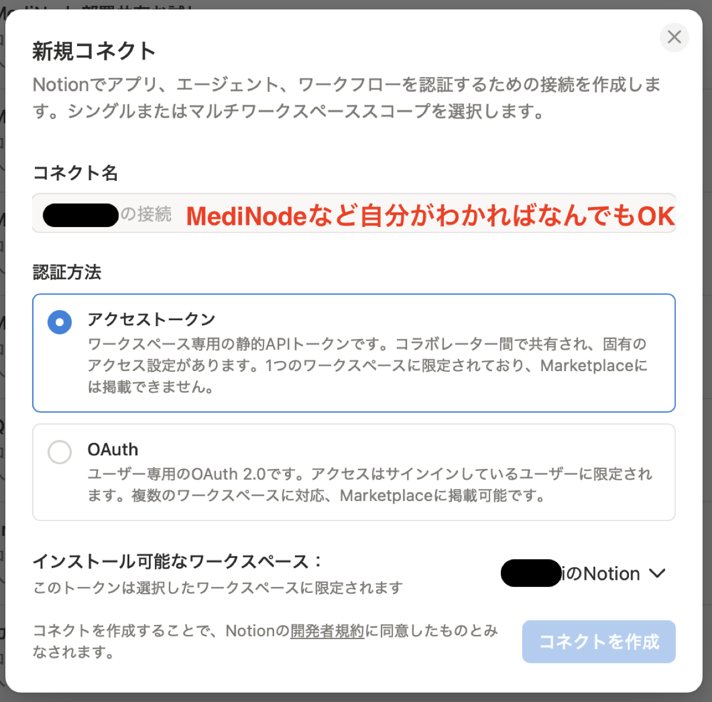
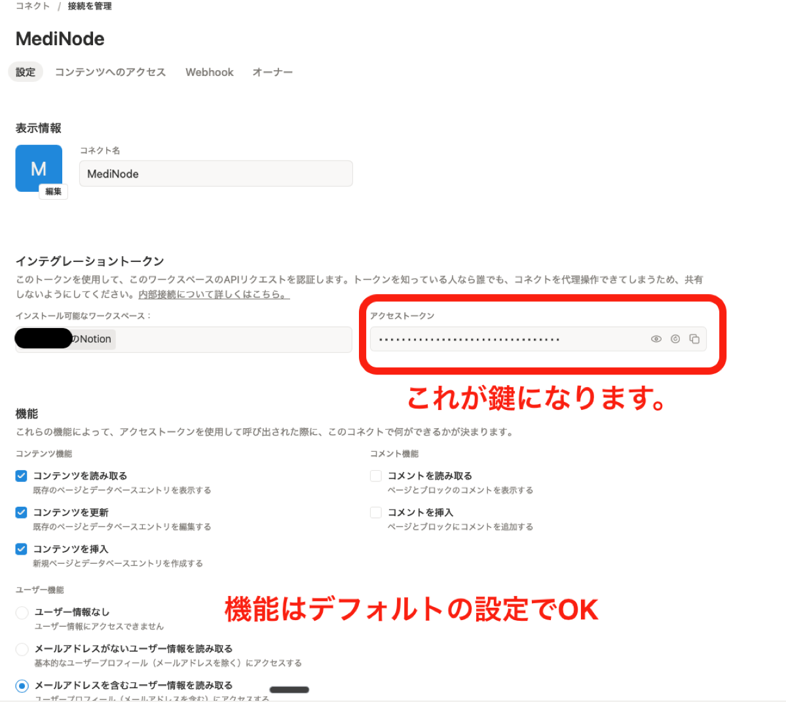
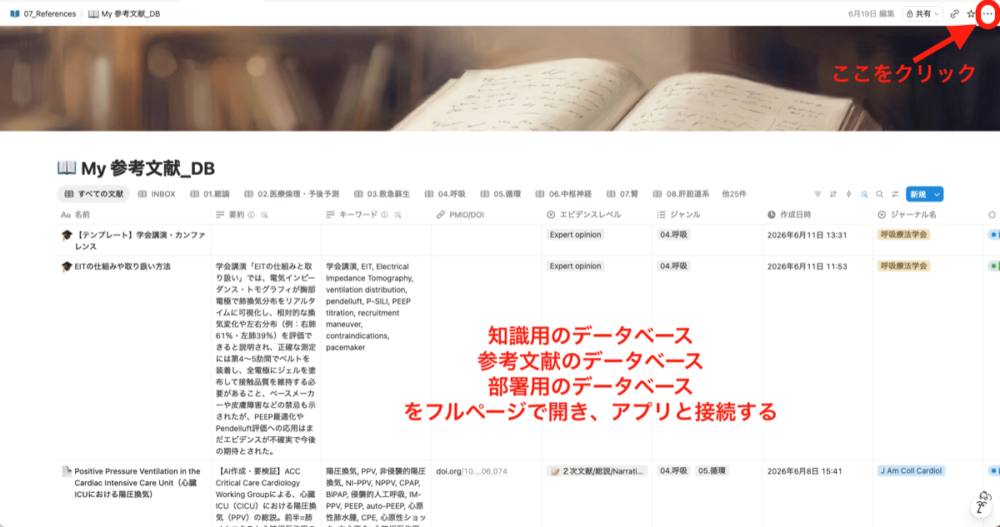
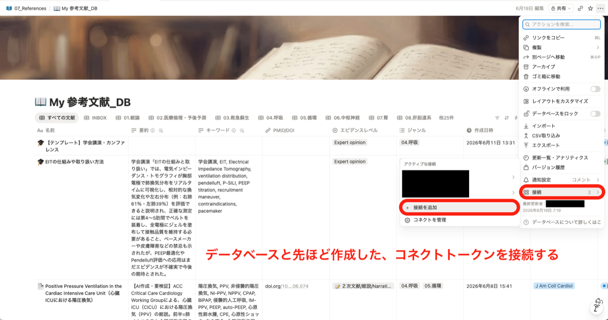
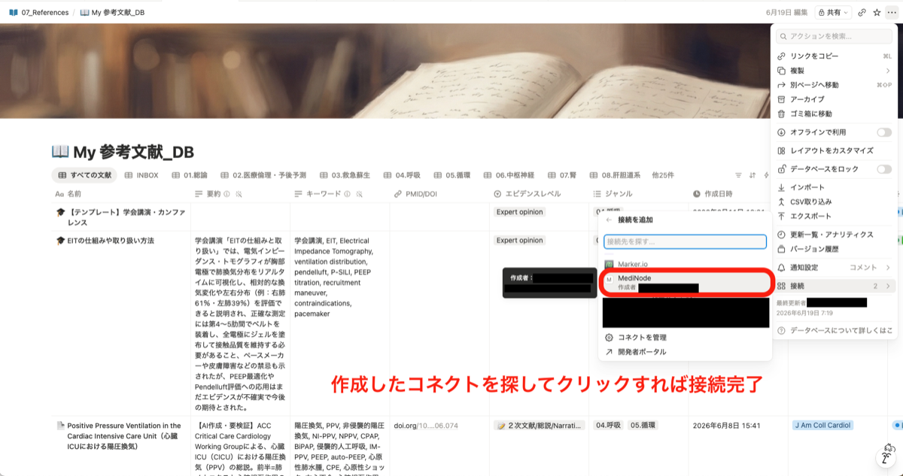
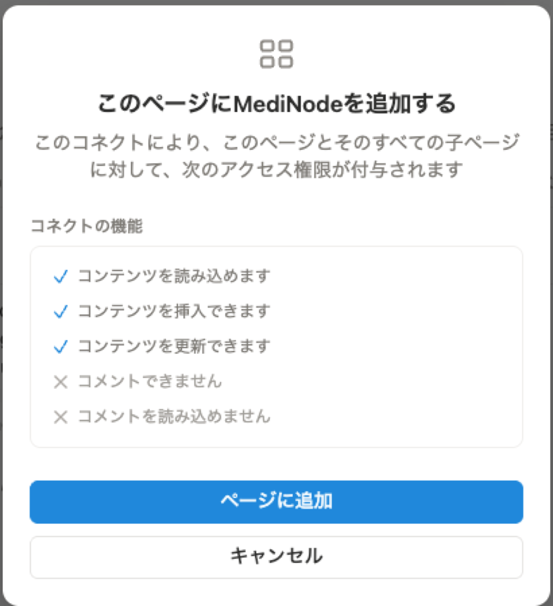
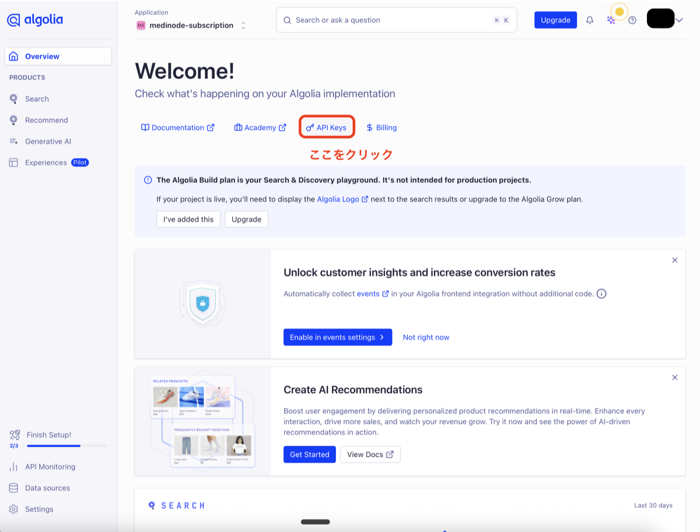
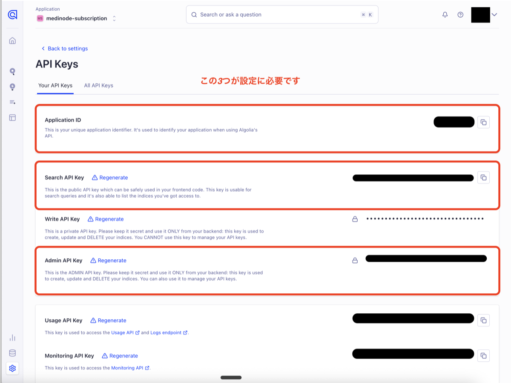

① Notionを準備する（テンプレを複製する or いまのDBをそのまま使う）→ ② コネクト（鍵）を作って、DBに接続する → ③ アプリに貼り付けて完了。このページの手順どおりに進めば、はじめてでも10分ほどです。
🧭 ①のNotion側の準備は Notionの準備ガイド に図解があります設定で出てくる言葉は、ほぼこの3つだけ。ここを押さえれば、あとは流れに沿うだけです。
メモ・表・データベースを作れる、無料のノートアプリ。MediNodeは、あなたがNotionに書いた医療メモを読みに行って検索します。お持ちでなければNotion公式から無料登録できます。使い方はNotion入門（note）で。
書いた分だけ増えていく、あなたの本棚。
Notionの中の「表形式のページ」のこと。1行が1つの知識。配布テンプレを複製すれば、必要な形のDBがそのまま手に入ります。
その本棚の、ひと棚。テンプレを複製すれば、棚ごと手に入ります。
MediNodeがあなたのNotionを読むための鍵。ntn_ で始まる文字列で、Notionの設定ページから無料で発行できます。入力後は暗号化して保存されます。
棚を開ける鍵。つくって、渡すだけです。
アプリを開くと最初に聞かれます（複数選択OK・あとから追加も可能）。選んだ内容で、続く手順が変わります。下のタブで、自分に合うルートを選んでください。
使いたいものを選んでください（複数選択可）。あとから「設定」で追加もできます。
自分のNotionに作った医療メモを検索します。自分のコネクトTokenとDBを使います。
職場で共有しているDBを検索します。代表者からもらったTokenとURLでOK（自分のNotionは不要）。
作者（専門医）が配信する医療ナレッジを検索します。自分のNotion/Algolia設定は不要で、すぐ使えます。
自分のNotionに作った医療メモを検索します
職場で共有しているDBを検索します
専門医が配信する医療ナレッジを検索します
▼ あなたのルートを選ぶと、手順が切り替わります
自分のNotionに作った医療メモを検索・クイズ化します。手順は「モード選択 → Notion設定 →（必要なら）オプション」。最短ならNotionを繋ぐだけです。
▶ 実際のスマホ画面の通し動画（2分53秒）。タップする場所は赤枠で表示されます。音は小さめのBGMのみ。下の手順は同じ内容を1枚ずつ確認できる図解です。
最初の画面で「🧑 自分の知識を使う」にチェックして「次へ」。これでこのルートに進みます。
検索の速さと手軽さのどちらを取るかを選びます。あとから設定でいつでも変更できます。
Algoliaアカウント不要、設定はNotion Tokenのみ。最短ですぐ始められます。
※ 検索のたびNotionへ問い合わせるため、表示まで1〜3秒かかります。
Algoliaでさらに速い検索に。日本語の部分一致やジャンル絞り込みも快適。
※ Algoliaの無料アカウントが必要。記事を更新するたび再同期します。
ここがメインです。まず「どのDBを検索対象にするか」を決めます。2通りから選べます。
配布テンプレ（Medical／Reference／📋Manual の3DB入り）を自分のNotionへ複製するだけ。必須プロパティが最初から揃っているので、手間なく始められます。
🎁 無料テンプレを入手（Notionマーケットプレイス）→すでに医療メモのDBをNotionで使っているなら、複製せずそのDBのURLを貼って接続できます。その際は必須プロパティ名（名前・ジャンル・知識レベル・要約・キーワード）を正確に合わせておきます。選択肢の値（ジャンル名など）は自由でOKです。
🧭 Notion側の準備だけを図解で見る →Notion側での準備は、実際の画面で。下の順番どおりに進めれば大丈夫です。
「コネクト」ページを開く。notion.so/my-integrations を開き（要ログイン）、右上の「＋新規コネクト」をクリック。
※ スマホでリンクからNotionアプリが開いてしまう場合は、SafariやChromeのアドレス欄に notion.so/my-integrations を直接入力して開いてください（Notionアプリにはこの作成画面がありません）。

名前を付けて作成。名前は自分がわかればOK。認証方法は「アクセストークン」を選んで「コネクトを作成」。

アクセストークン（＝鍵）をコピー。作成後の画面に表示されます。機能はそのままでOK。ntn_ で始まる文字列です。

使うDBをフルページで開き、右上の「…」をクリック。Medical・Referenceの各DBで、同じ操作を繰り返します。

メニューの「接続」→「接続を追加」を選びます。

さきほど作った「MediNode」を探してクリック。

「ページに追加」で接続完了。あとは、コピーしたトークンと各DBのURLを、アプリのセットアップ画面に貼り付けて保存するだけです。

ntn_ トークン）ができ、さらに「どのDBを読ませるか」を各DBの「…→コネクトを追加」で1つずつ許可します。ntn_（新）または secret_（旧）で始まります。パスワードと同じく他人に教えないでください。シンプルモードなら、この手順は表示されません。パワーモードを選んだときだけ必要です。やることは、無料登録して3つのキーをコピーし、貼り付けて再同期するだけです。
Algolia で無料登録（Buildプラン）。登録するとアプリが自動で用意されます。ダッシュボード上部の「API Keys」を開きます。

3つの値をコピーして、アプリの設定画面に貼り付けます（下でどれがどれか説明します）。

アプリの識別番号。名前のようなもので、人に見られても問題ありません。
「検索するだけ」の鍵。読み取り専用なので安全です。
データを書き換えられる強力な鍵。絶対に他人に渡さないでください。同期のときに使います。
ほとんどの方はスキップでOK。あとから設定画面（⚙️）で変更できます。部署DB・プレミアム・📋マニュアルDBを後から足すのもここからです。
「設定を保存して検索を開始」を押せば完了。シンプルモードなら、Notionを直すと次の検索から即反映されます。お疲れさまでした。
職場・チームで共有しているDBを検索します。自分のNotionは不要。代表者から「トークン」と「DBのURL」をもらって貼るだけ。モード選択もスキップされ、すぐ使えます。
最初の画面で「🏥 みんなの知識を使う」にチェック。部署のみを選んだ場合、Algoliaなどの設定はスキップされます。
チームでDBを管理している代表者（先輩・管理担当）に、次の2つを聞きます。
ntn_ で始まる文字列）ntn_ トークン）でDBに接続します。対象DBに「コネクトを追加」されていれば、メンバー・ゲストの区別なくアプリ内で閲覧できます。もらったトークンとDBのURLを、セットアップ画面（または設定→部署DB）に貼り付けて保存。これだけで部署の知識を検索できます。
自分でNotionを用意しなくても、チームの知識をすぐ引けます。後から「自分の知識」を足したくなったら、設定からいつでも追加できます。